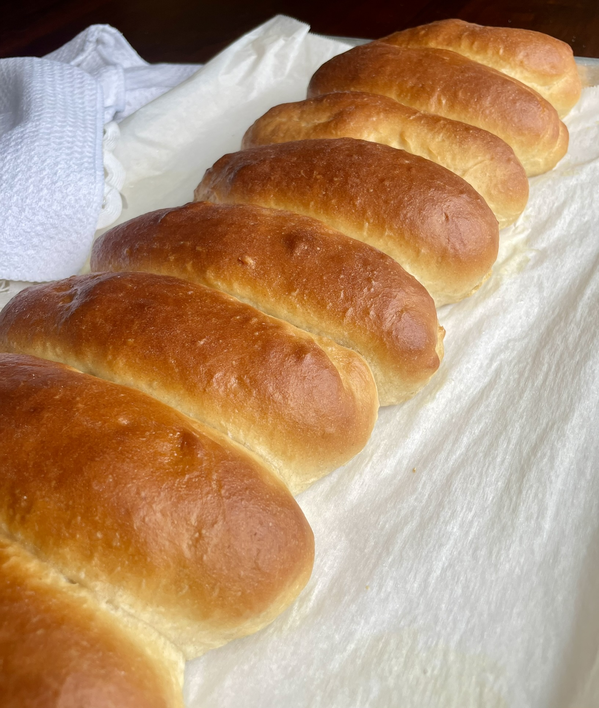
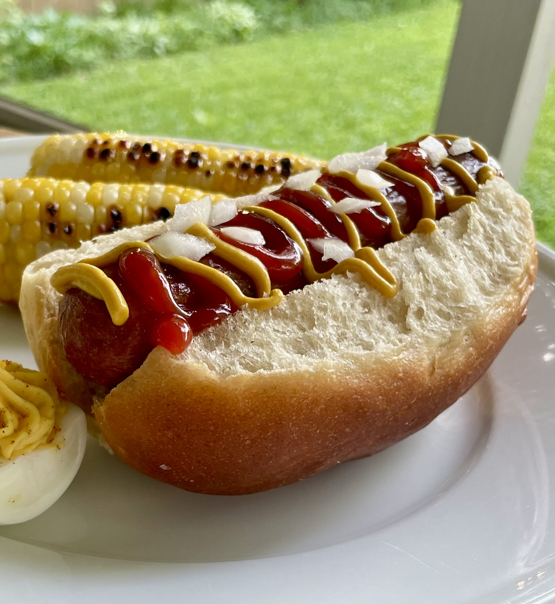
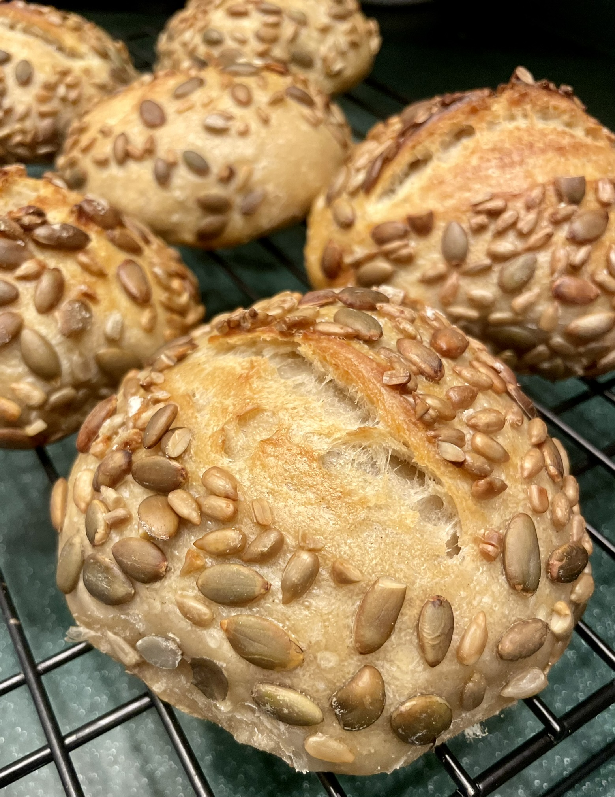
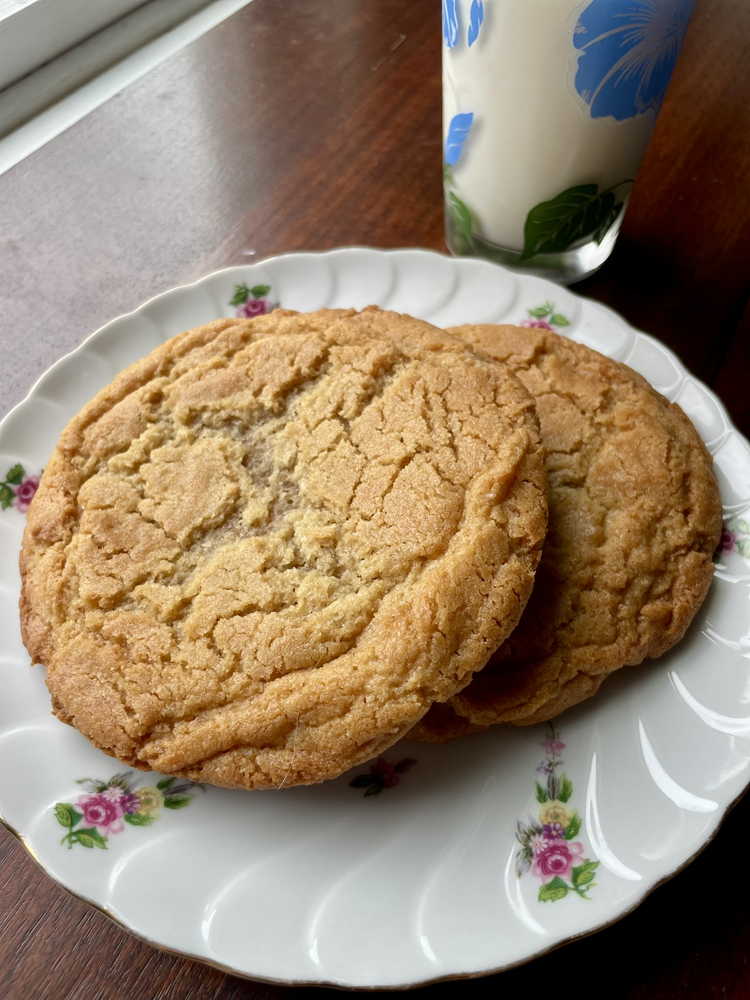

The Wild Nunn Bakery
Handcrafted with wild yeast & a lot of Sunday mornings
Sourdough Loaves
Wild-fermented, slow-proofed, and baked to a shattering golden crust. The one that started it all.
Simple Inclusions
Aged cheddar folded through the dough and baked into every crackling, molten-edged score.
A swirl of cinnamon and brown sugar ribboned through a tangy open crumb. Dessert disguised as bread.
Premium Inclusions
Dark chocolate chips laminated through a buttery sourdough. Dessert and breakfast settled their differences.
Golden honey and toasted pistachios woven into a wild-fermented crumb. Sweet, nutty, and entirely too easy to eat.
Hotdog & Hamburger Buns

Gloriously golden sourdough buns, pillowy soft inside with just a whisper of tang.

Sturdy enough to hold all the toppings, soft enough to make you forget the hot dog.
Dinner Rolls

Pillowy soft with a golden seed-studded crust — the kind of roll that gets eaten before anyone sits down.
Cookies

Thick, chewy, and golden-edged — sourdough peanut butter cookies that mean business. Best served with a cold glass of milk.